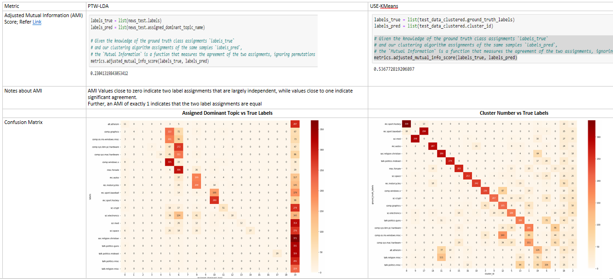

I. Introduction
What algorithms are covered here?
- Prior-topic words guided Latent Dirichlet Allocation and
- Universal Sentence Encoder (USE) powered K-Means
What questions am I answering here?
Given that USE can encode complex semantic information, is LDA worthwhile?
Can LDA be used for at least some type of data, where it can produce better/on-par results compared to USE-K-Means?
Before diving into the study, let us understand how USE-KMeans and PTW-guided LDA works
II. About USE
IIA. How USE works?
USE converts sentences into 512 embeddings 
Semantic Similarity Correlation Matrix 
Despite many common words, semantically different sentences will have dissimilar embeddings 
IIB. USE Architecture
There are two variants
Variant 1: Transformer Encoder:

source: https://amitness.com/2020/06/universal-sentence-encoder/
What does a Transformer Encoder Layer comprise? - Self Attention Layer - Feed Forward Network Layer 
Variant 2: Deep Averaging Network:

IIC. Pre-trained Tasks in USE
Overall Pipeline of how USE is trained:

A. Skip-thought prediction:
- Use Central Sentence to predict both the Previous Sentence and Next Sentence

B. Response Prediction:
- Train the USE architecture to do smart reply prediction

C. Natural Language Inference:
- Do NLI task prediction, where given a premise and a hypothesis, the model is trained to predict whether the hypothesis is an entailment, contradition or neutral to the premise
III. About LDA
- Latent:
- Topic structures in a document are latent/hidden in the text
- Dirichlet:
- The Dirichlet distribution determines the mixture proportions of
- the topics in the documents and - the words in each topic.
- The Dirichlet distribution determines the mixture proportions of
- Allocation:
- Allocation of words to a given topic and allocation of topics to a document
IIIA. Intuitive understanding of Dirichlet Distribution
- A Normal/Gaussian distribution is a continuous probability distribution over all the real numbers
- It is described by a mean and a variance.

- A Poisson distribution is a discrete probability distribution that expresses the probability of a given number of events occurring in a fixed interval

The Poisson distribution is specified by one parameter: lambda (λ). As lambda increases to sufficiently large values, the normal distribution (λ, λ) may be used to approximate the Poisson distribution Source:https://en.wikipedia.org/wiki/Poisson_distribution
- Now, what is Dirichlet Distribution?
- The dirichlet distribution is a probability distribution as well
- but it is not sampling from the space of real numbers. Instead it is sampling over a probability simplex
(0.6, 0.4)
(0.1, 0.1, 0.8)
(0.05, 0.2, 0.15, 0.1, 0.3, 0.2)- How Dirichlet Distribution varies w.r.t dirichlet prior:
- The below image shows Dir(α)
- As α increases from 0.05 (1/20) to 0.1, 0.2, 0.4 respectively in plots from left to right & top to down, you can see the distribution becoming more uniform.
- The below image shows Dir(α)
IIIB. How LDA Works?
- LDA is a generative model
- LDA processes documents as ‘bag of words’ – ordering of words is not important
In principle, LDA generates a document based on dirichlet distribution (dd) of topics over documents and dd of words over topics
But we inverse the generative process for statistical inference
IIIC. Hyperparameters of LDA

D = Total No. of Documents
N = No. of Words = Vocab Size
T = No. of Topics
θd = Topic Distribution for a particular document d
Φt= Word Distribution for a topic t. Here for topic 1 and 2.
(colored books represent words/tokens)
Zd,n = Topic Distribution for n th word in document d
Wd,n = nth word in dth documentα= parameter that sets the dircihlet prior on the per-document topic distribution (θ)
= parameter that represents the doc-topic density
= determines the no. of topics in each doc
= (Default) = 1/num_of_topics (in sklearn and gensim)
decreasing alpha results in less number of topics per document
β= parameter that sets the dirichlet prior on the per-topic word distribution(ϕ)
= parameter that represents the topic-word density
= determines the no. of words per each topic
= (Default) = 1/num_of_topics (in sklearn and gensim)
decreasing beta results in just a few major words in topics
m = base measure for per-document topic distribution; a simplex vector/array (m1, m2, …, mT) ; sums to one
α = Concentration parameter α (positive scalar)
α * m = (α1, α2, …., αT)
n = base measure for per-topic word distribution; a simplex vector/array (n1, n2, …, nN); sums to one
β = Concentration parameter β (positive scalar)
β * n = (β1, β2, …., βT)
There is also another hyper parameter η - topic coherence or perplexity - which can be used to determine the number of topics IIID. Now, How does PTW-LDA work?
- Nudge the regular LDA to converge faster and better with human-reviewed words list for each topic
How the topics are seeded with some seed words Source:Freecodecamp.org
Chaotic LDA and Clear PTW_LDA outputs…
LDA might need several hyperparameter tuning attempts to get to the desired splits
Default initialization with uniform word topic distribution

Seeded Initialization

The seeded words are guided towards seeded topics for converging faster
IIID. Pre-processing and Hyper-parameters
Preprocessing:
| PTW-LDA | USE + Clustering |
|---|---|
| 1. Stop words removed | No pre-processing; Comments were used as is |
| 2. Lemmatized | |
| 3. Top 20 words per (ground truth) label was extracted | |
| 4. Human-reviewed list of 20 word lists (each corresponding to 1 topic) were chosen as prior topic words input (SAT is useful when there are prior topic words fed; otherwise it works as normal LDA) |
Hyperparameter Tuning
| PTW-LDA (best possible based on heuristics and limited # of experimentations) |
USE + Clustering |
|---|---|
| No. Of Topics | No. Of clusters |
| Max Iterations | Max Iterations (for K-Means) |
| (default) Doc_topic_prior = alpha = 1/ no_of_topics | |
| (default) topic_word_prior = beta = 1/ no_of_topics | |
| Learning_method: “batch” (whole dataset is used) | |
| (alternative is ‘online’ which uses only batch size no. Of comments; similar to mini_batch_kmeans) | |
| Seeded_words_list | |
| Seed_coefficent/seed confidence (how much to nudge the seeded words) |
IV. Comparison Study
- Data I -
20 Newsgroups- Supervised Evaluation

Source for Adjusted Mutual Information Score
- Data II -
ABC (Australian Broadcast Corporation) Corpus- Unsupervised Evaluation
| Metric | PTW-LDA | USE-Clustering |
|---|---|---|
| Word Embedding based Coherence Score (more the coherence score, better is the clustering output) |
Coherence Score for 20 topics: 0.091 |
Coherence Score for 20 clusters : 0.159 |
| Methodology of computing the above metric | Take the top 10 words that constitute each of the 20 topics (each topic comprises of a probability simplex of the words; select the top 10 highly probable words in that topic) For our case, the top 10 words used for coherence computation in the 10 topics are: [[‘police’, ‘baghdad’, ‘war’, ‘probe’, ‘protest’, ‘anti’, ‘missing’, ‘man’, ‘fight’, ‘coalition’], [‘report’, ‘pm’, ‘death’, ‘korea’, ‘claim’, ‘war’, ‘north’, ‘nt’, ‘toll’, ‘protesters’], [‘win’, ‘govt’, ‘set’, ‘community’, ‘end’, ‘wins’, ‘vic’, ‘indigenous’, ‘road’, ‘help’], [‘world’, ‘cup’, ‘australia’, ‘found’, ‘ban’, ‘plans’, ‘lead’, ‘gets’, ‘expected’, ‘match’], [‘un’, ‘coast’, ‘title’, ‘takes’, ‘peace’, ‘iraq’, ‘gold’, ‘defence’, ‘residents’, ‘play’], [‘iraq’, ‘iraqi’, ‘war’, ‘says’, ‘troops’, ‘killed’, ‘dead’, ‘hospital’, ‘clash’, ‘forces’], [‘council’, ‘boost’, ‘mp’, ‘fire’, ‘group’, ‘qld’, ‘minister’, ‘defends’, ‘land’, ‘welcomes’], [‘man’, ‘court’, ‘charged’, ‘face’, ‘plan’, ‘open’, ‘murder’, ‘urged’, ‘case’, ‘charges’], [‘new’, ‘oil’, ‘dies’, ‘security’, ‘crash’, ‘sars’, ‘high’, ‘year’, ‘house’, ‘car’], [‘water’, ‘rain’, ‘claims’, ‘wa’, ‘nsw’, ‘farmers’, ‘drought’, ‘howard’, ‘centre’, ‘union’]] For each topic, taking 2 out of the top 10 words at a time, compute cosine similarity using pre-trained W2V embedding Overall Coherence is sum of similarity scores of all possible pairs of words for each topic, normalized by the no. of topics |
Take the top 10 words that constitute each of the 20 clusters (top 10 words (from stop-words removed set) are computed based on their TF-IDF weighted scores in that cluster) For each cluster, taking 2 out of the top 10 words at a time, compute similarity using pre-trained W2V embedding For our case, the top 10 words used for coherence computation in the 10 clusters are: [[‘win’, ‘cup’, ‘final’, ‘wins’, ‘world’, ‘afl’, ‘coach’, ‘england’, ‘season’, ‘day’], [‘council’, ‘plan’, ‘market’, ‘funding’, ‘boost’, ‘housing’, ‘water’, ‘funds’, ‘budget’, ‘rise’], [‘crash’, ‘man’, ‘killed’, ‘death’, ‘dies’, ‘dead’, ‘injured’, ‘woman’, ‘car’, ‘sydney’], [‘interview’, ‘michael’, ‘business’, ‘abc’, ‘news’, ‘market’, ‘analysis’, ‘david’, ‘extended’, ‘andrew’], [‘australia’, ‘australian’, ‘aussie’, ‘sydney’, ‘australians’, ‘day’, ‘aussies’, ‘australias’, ‘melbourne’, ‘south’], [‘abc’, ‘country’, ‘hour’, ‘news’, ‘weather’, ‘grandstand’, ‘friday’, ‘nsw’, ‘drum’, ‘monday’], [‘govt’, ‘election’, ‘council’, ‘government’, ‘minister’, ‘pm’, ‘parliament’, ‘nsw’, ‘anti’, ‘trump’], [‘police’, ‘man’, ‘court’, ‘murder’, ‘charged’, ‘accused’, ‘death’, ‘guilty’, ‘charges’, ‘assault’], [‘farmers’, ‘water’, ‘drought’, ‘industry’, ‘farm’, ‘coal’, ‘green’, ‘cattle’, ‘mining’, ‘nsw’], [‘health’, ‘hospital’, ‘flu’, ‘mental’, ‘doctors’, ‘treatment’, ‘cancer’, ‘drug’, ‘service’, ‘care’]] Overall Coherence is sum of similarity scores of all possible pairs of words for each cluster, normalized by the no. of clusters |
Conclusion
We have used two News corpus of varying text length. One dataset has ground truth labels and the other doesn’t have labels
In our comparison of PTW-LDA vs USE-Clustering
- using both ‘Supervised’ (Adjusted Mutual Information Score) and ‘Unsupervised’ evaluation metrics, USE-clustering performs far superior to PTW-LDA despite repeated attempts at different set of hyper-parameters for PTW-LDA
Important References:
USE:
- https://amitness.com/2020/06/universal-sentence-encoder/
- USE Paper: https://arxiv.org/abs/1803.11175
LDA:
- The original paper of LDA by David Blei - https://www.slideshare.net/hustwj/nicolas-loeff-lda - http://videolectures.net/mlss09uk_blei_tm/ - http://www.cs.columbia.edu/~blei/talks/Blei_ICML_2012.pdf - https://www.quora.com/What-is-an-intuitive-explanation-of-the-Dirichlet-distribution (it compares normal distribution with Dirichlet Distribution) - https://ldabook.com/lda-as-a-generative-model.html - https://ldabook.com/index.html